In this chapter, we analyse the phase space structure of the roaming dynamics in a two degree of freedom potential energy surface consisting of two identical planar Morse potentials separated by a distance. This potential energy surface was previously studied in \cite{carpenter2018dynamics}, and it has two potential wells surrounded by an unbounded flat region containing no critical points. We study the phase space mechanism for the transference between the wells using the method of Lagrangian descriptors.
The roaming mechanism for chemical reactions was reported in \cite{townsend2004roaming}. This paper inspired and motivated further work on the topic that is continuing. Some recent reviews of the topic are \cite{Bowman2011Suits, Bowman2011roaming, BowmanRoaming, suits2008, Mauguiere2017}.
Following \cite{carpenter2018dynamics}, a concise description of the roaming mechanism that seems to capture all such reactive phenomena attributed to roaming to date is the following. An energised molecule, which appears on the verge of dissociating into two fragments, instead exhibits behaviour where one fragment begins to rotate about the other in the flat region of the potential energy surface, culminating in the two fragments re-encountering each other in a reactive event. This reactive event may be constitutionally identical to one for which a familiar transition state associated with an index one saddle can be identified, but the roaming reaction path is observed to avoid the intrinsic reaction path.
The double Morse potential energy surface allows us to analyse key feature of the reaction dynamics which appear to underlay roaming mechanism. In particular, the double Morse has a flat roaming region where it can be rigorously proven that there are no saddle points. For explaining reaction mechanisms in the context of the potential energy surface index one saddles have been a fundamental building block. This has motivated efforts to locate index one saddle points that can be attributed as the mechanism for roaming (roaming saddles).
However, the work in \cite{carpenter2018dynamics} showed that roaming mechanism in the double Morse potential occurs without the influence of saddle points. In particular, it was demonstrated that roaming was governed by phase space structures governing dynamics in the flat region of the potential energy surface. These phase space structures are normally hyperbolic invariant manifolds (NHIMs) \cite{wiggins_book1994,Wiggins2001,Uzer2002, Wiggins08,Wiggins2016}, which in the case of 2 DoF Hamiltonian systems are unstable periodic orbits \cite{Mauguiere2015}.
The main issue of interest in \cite{carpenter2018dynamics} was the motion of trajectories between the two wells and the intermediary dynamics in the flat region. It was conjectured that three types of unstable periodic orbits mediated the dynamics. The description of roaming given in \cite{carpenter2018dynamics} was based on the behaviour of trajectories initiated on periodic orbit dividing surfaces associated with the three types of periodic orbits. The trajectory behaviour confirmed the conjecture. However, this work did not examine the phase space structures that determine the different types of trajectory behaviour. Such an analysis would involve an understanding of the geometry of the stable and unstable manifolds of the periodic orbits in phase space, similar in spirit to the analysis that has been carried out in \cite{krajvnak2018phase, krajvnak2018influence}.
In this chapter, we will determine the phase space pathways for the roaming mechanism in the double Morse oscillator using the method of Lagrangian descriptors. Lagrangian descriptors are a trajectory diagnostic that has proven useful for revealing phase space structures in dynamical systems. The method was originally developed to reveal fluid flow structures in Lagrangian transport problems (hence the name Lagrangian descriptors) \cite{chaos}. However, in recent years, the ease of implementation and interpretation of the method has applied in fields far beyond fluid mechanics. In particular, in theoretical chemistry the method has seen a diverse collection of applications to problems in chemical reaction dynamics in recent years, see, e.g., \cite{patra2018detecting, craven2016deconstructing, craven2017lagrangian, craven2015lagrangian, junginger2016transition, revuelta2017transition, junginger2017chemical, feldmaier2017obtaining, JH2015}.
The method facilitates a high-resolution approach for exploring high dimensional phase space with low dimensional sets. It can also be applied to both Hamiltonian and non-Hamiltonian systems \cite{lopesino2017} as well as to systems with arbitrary, even stochastic, time-dependence \cite{balibrea2016lagrangian}. Moreover, Lagrangian descriptors can be applied directly to trajectory data sets, without the need for an explicit dynamical system \cite{mmw14}.
The classical Lagrangian descriptor field is computed by selecting a region of phase space and then choosing a grid of initial conditions for trajectories in this set. Points in the set are assigned a value according to the arc length of the trajectory starting at that initial condition after integration for a fixed, finite time, both backward and forward in time (all initial conditions in the grid are integrated for the same time). The idea underlying Lagrangian descriptors is that the influence of phase space structures on trajectories will result in differences in arc length of nearby trajectories. This has been verified and quantified in terms of the notion of singular structures in the Lagrangian descriptor fields, which are easy to recognise visually \cite{ cnsns, lopesino2017}.
Trajectories are the elementary objects that are used to explore phase space. In fact, phase space structure is built from trajectories and their behaviour. For high dimensional phase space this approach is problematic and prone to issues of interpretation since a tightly grouped set of initial conditions may result in trajectories that become far with respect to each other in high dimensional phase space. The method of Lagrangian descriptors takes a new and different approach by encoding the phase space structure in the initial conditions of trajectories, rather than the precise location of their futures and pasts (after a specified amount of time). Hence, a low dimensional set of phase space can be selected and sampled with a grid of initial conditions of high resolution. Since the phase space structure is encoded in the initial conditions of the trajectories, no resolution in the chosen slice of phase space is lost as the trajectories evolve in time.
This chapter is outlined as follows. In section \ref{sec:DMPES}, we recall the main features of the double Morse potential energy surface and resulting Hamiltonian system as described in \cite{carpenter2018dynamics} that are relevant to our analysis. In section \ref{sec:config}, we define the features of the double Morse potential energy surface that are relevant to our analysis. In Section \ref{sec:LD} we describe Lagrangian descriptors. In section \ref{sec:PO}, we show how Lagrangian descriptors can be used to compute periodic orbits and their stable and unstable manifolds. In section \ref{sec:roaming}, we describe the phase space pathways for roaming using the stable and unstable manifolds of the periodic orbits.
The two degrees of freedom Hamiltonian system that we consider is the sum of two identical planar Morse potentials \cite{Morse29} separated by a distance $2b$:
and kinetic energy of the form:
Therefore the Hamiltonian is:
Following \cite{carpenter2018dynamics}, the parameters for the Hamiltonian are chosen as follows:
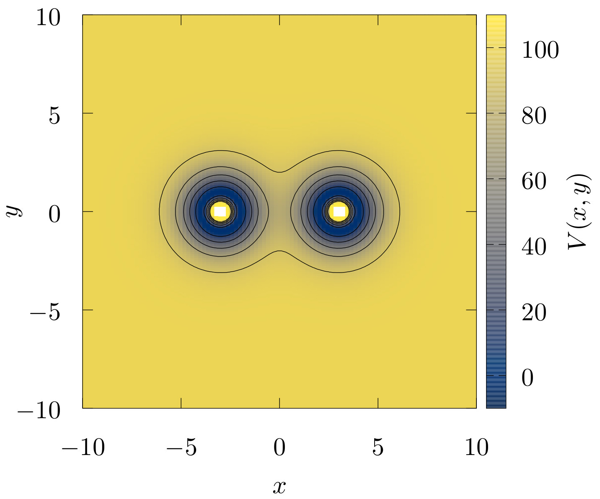
\caption{Double Morse potential energy in colour scale. The contour lines black on the figure are the equipotential lines for different values of the potential energy. The potential has two wells and two forbidden regions, each one in the centre of each well. The potential energy converges to a constant value in the asymptotic region. }\label{fig:V_c}
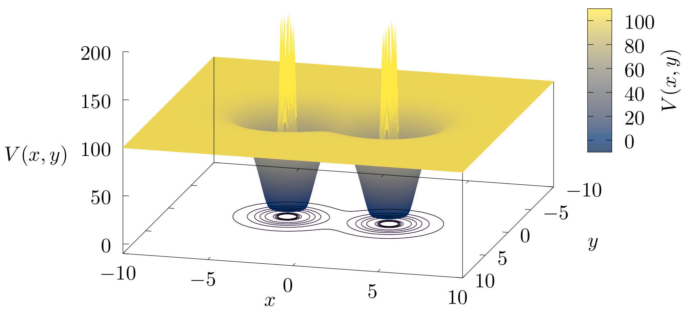
\caption{Double Morse potential energy surface in colour scale. The potential has a saddle point between the two wells.} \label{fig:V}
The Figs. \ref{fig:Vc}, and \ref{fig:V} show plots of the potential energy in colour scale and equipotential lines. At the origin, $(x=0, y=0)$ the potential energy has an index one saddle. The potential energy evaluated in the saddle point is $V(0,0) = E{s}$. This index one saddle point exists for all values of $b$, and $E_{s}$ is below $D_e$ in this example, see figure \ref{fig:V_c}.
The double Morse potential energy function goes exponentially fast to zero in the asymptotic flat region. This almost flat region plays an essential role in the roaming phenomenon, and it is called the roaming region.
\label{sec:LD}
The classical Lagrangian descriptor is the arc length of a trajectory. In the present article, we are going to use a variant, the integral of the square of the infinitesimal arc length proposed in \cite{lopesino2017}. Let us consider the autonomous ordinary differential equations
where $\mathbf{v}(\mathbf{x},t) \in C^r$ ($r \geq 1$) in $\mathbf{x}$ and continuous in time. The definition of Lagrangian descriptor depends on the initial condition $\mathbf{x}_{0} = \mathbf{x}(t_0)$, on the time interval $[t_0+\tau_{-},t_0+\tau_{+}]$, and takes the form,
where $\tau_{+} \geqslant 0$ and $ \tau_{-} \leqslant 0 $ are freely chosen parameters and the overdot symbol represents the derivative with respect to the time $t$.
The phase space of a Hamiltonian system with two degrees of freedom has 4 dimensions, considering the conservation of the energy, it is possible to represent the dynamics of the system in the 3-dimensional constant energy manifold. In the constant energy manifold, it is possible to visualise the dynamics and identify the essential structures to understand the dynamics.
The periodic orbits are essential structures to understand the dynamics of the system in the constant energy manifold. Around a stable periodic orbit, the KAM-tori confine the trajectories in the region defined by the tori. In contrast, the dynamics in a neighbourhood of an unstable hyperbolic periodic orbit has a different nature. Its stable and unstable manifolds intersect in the hyperbolic periodic orbit and direct the trajectories in the neighbourhood. The definition of the stable and unstable manifolds $W^{s/u} (\Gamma)$ of the periodic unstable orbit $\Gamma$ is the following,
\begin{equation} W^{s/u} (\Gamma) = \lbrace \mathbf{x} \vert \mathbf{x}(t) \rightarrow \Gamma, t \rightarrow \pm \infty \rbrace. \end{equation}In the Hamiltonian system with 2 degrees of freedom, $W^{s/u} (\Gamma)$ has 2 dimensions and form impenetrable barriers in the constant energy manifold. The segments of the stable and unstable manifolds direct the transport between different regions \cite{Kovacks2001}.
Another important property of the stable and unstable manifolds related to the chaotic dynamics is that, if a stable manifold and an unstable manifold intersect transversally at one point, then an infinite number of transversal intersections between them exist. The structure generated by the union of the stable and unstable manifolds is called tangle and defines a set of tubes that direct the dynamics in the phase space. The trajectories in a tube never cross the boundaries of a tube. This fact is a consequence of the uniqueness of the solution of the ordinary differential equations.
The Lagrangian descriptors are convenient tools to explore the phase space structure, in particular, to find stable and unstable manifolds of periodic orbits. To understand the basic idea that underpins the detection, let us consider the behaviour of the trajectories in a neighbourhood of stable manifold $W^{s}(\Gamma)$. The trajectories in $W^{s} (\Gamma)$ converge to the periodic orbit $\Gamma$, and the nearby trajectories in the neighbourhood of $W^{s} (\Gamma)$ having similar behaviour for a finite interval of time. After this interval of time, the trajectories move away from the stable hyperbolic periodic orbit $\Gamma$ following the unstable manifold $W^u(\Gamma)$. This different behaviour generates the singularities in the Lagrangian descriptors \cite{lopesino2017}.
The variant of Lagrangian descriptor in the equation \eqref{eq:LD} has negative sing between the two integrals. This sign allows differentiating between the stable and unstable manifolds on the Lagrangian descriptor plots. The set of singularities on integral with $\tau_+$ shows the stable manifolds and the set of singularities on integral with $\tau_-$ the unstable manifolds. The superposition of the two paters of singularities revels the tangle between the stable and unstable manifolds.
\label{sec:PO}
In order to show the dynamics of this two degree of freedom Hamiltonian system in the regime of dissociation and roaming, let us consider a fixed value of the total energy above the dissociation energy threshold, $E = 101 > D_e $. In this case, the trajectories close to the wells can cross the interaction region and escape to infinity. The trajectories that start in the interaction region are sensitive to initial conditions. That means that two trajectories that start arbitrary close can finish in a different direction in the asymptotic region. This phenomenon is called chaotic scattering and is a kind of transient chaos \cite{Tel_book, Tel2015}.
The chaotic scattering is a common phenomenon in the open Hamiltonian system. Detailed studies of chaotic scattering in Hamiltonian systems with two and three degrees of freedom are in the recent literature \cite{Sanjuan2013, Zapfe2010, Drotos2014, Gonzalez2012}. The tangle between the stable and unstable manifolds generates rich dynamics in the interaction region. However, the dynamics is simple in the asymptotic region, where the trajectories converge to straight lines.
The double Morse potential energy $V$ satisfies the asymptotic condition $Vr^2 \rightarrow 0$ when $r\rightarrow \infty$, then the linear momenta of the trajectories that reach the asymptotic region converge to a constant value \cite{Newton_book}.
The trajectories associated with dissociation reactions start in one well and finish in the asymptotic region. The trajectories associated with roaming reactions start in one well, travel outside the well in the roaming region where the potential energy is almost flat, and reach the other potential well.
In order to define the transport between the two potential wells and the asymptotic region, the configuration space is divided into three regions, see figure \ref{fig:transport}. Two circumferences around each potential well, define the regions $A$ and $B$, and another external circumference around the two wells defines the asymptotic region $C$ where the trajectories are close to straight lines and escape to infinity.
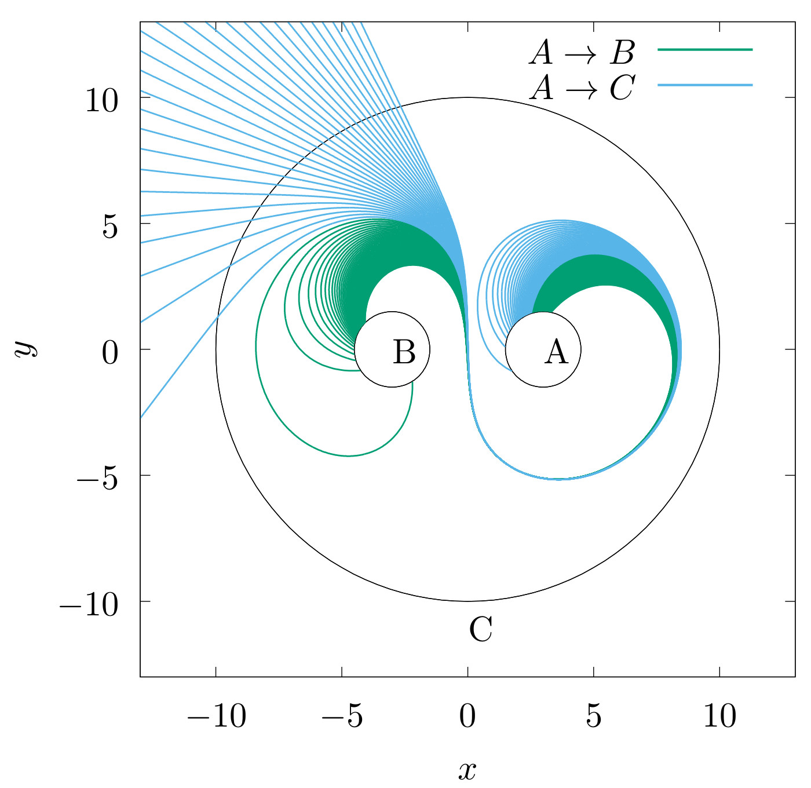
\caption{ Roaming and dissociation trajectories. The trajectories in the figure start in the region $A$ until intersecting the region $B$ or go to the asymptotic region $C$ defined by an outer circle. The trajectories that travel from one well to the other well are the roaming trajectories, and the trajectories that do not reach the other well are the dissociation trajectories.} \label{fig:transport}
In a previous work \cite{carpenter2018dynamics}, it has been found that the roaming and dissociation trajectories in the system are related to three types of periodic orbits. Let be $\Gamma_1$, $\Gamma_2$, and $\Gamma_3$ periodic orbits representatives of each type. The projection of the three periodic orbits in configuration space is shown in Fig. \ref{fig:orbits_2D}. The projection of periodic orbit $\Gamma_1$ encircles the interaction region and the two potential wells. The projection of $\Gamma_2$ also encircles the two wells, but self intersects at the origin. The projection of $\Gamma_3$ encircles just one well.
In the configuration space, the projection of periodic orbits $\Gamma_2$, $\Gamma_3$ are close, but it is clear that the orbits are separated in the constant energy manifold, see Fig. \ref{fig:orbits_3D}. The three orbits are very close to each other's in a neighbourhood of the point $(x=8.45,y=0,p_x=0)$.
As a consequence of the symmetries $x\rightarrow -x$ and $y \rightarrow -y$ of the potential energy $V(x,y)$, there are 4 orbits type I, 2 orbits type II, and 4 orbits type III in the phase space. It is necessary to consider only one element of every type for the numerical calculations.
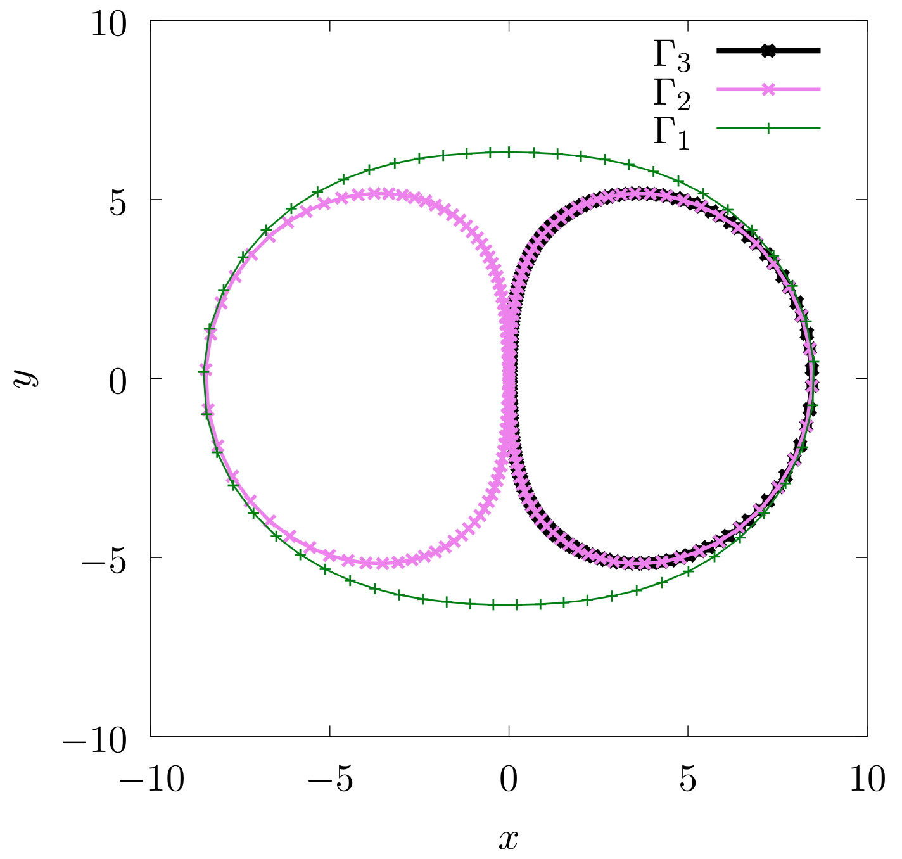
\caption{Projection of the periodic orbits $\Gamma_1$, $\Gamma_2$, and $\Gamma_3$ in the configuration space.} \label{fig:orbits_2D}
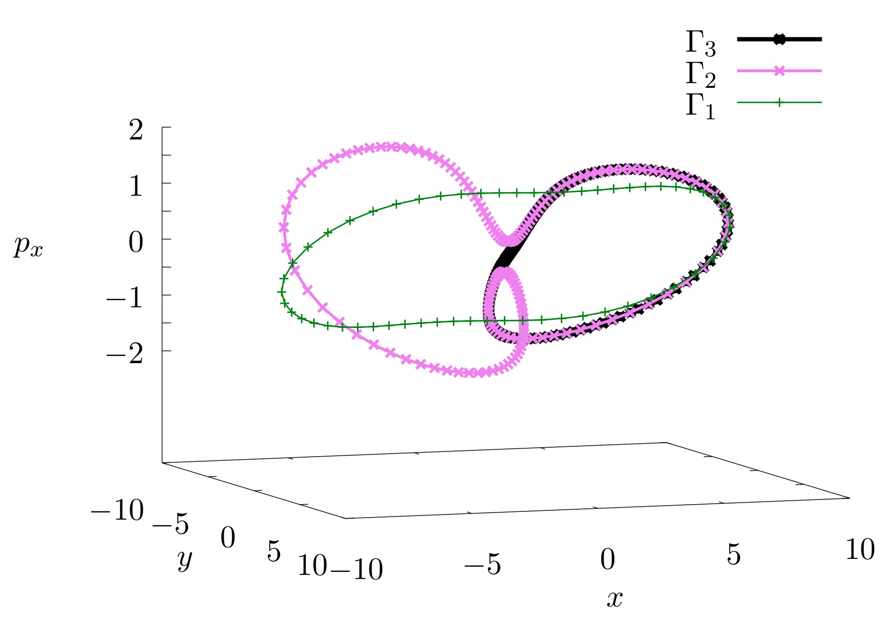
\caption{ Periodic orbits $\Gamma_1$, $\Gamma_2$, and $\Gamma_3$ in the constant energy parameterise by coordinates $(x,y,p_x)$.} \label{fig:orbits_3D}
A common method to find the periodic orbits is based on the Poincar\'e map defined on a 2-dimensional Poincar\'e surface. The Poincar\'e map is a function from the Poincar\'e surface to itself obtained by following trajectories from one intersection of the Poincar\'e surface to the next. The fixed points of the Poincar\'e map are the intersections between the periodic orbits and the Poincar\'e surface. In this system, a natural choice of Poincar\'e surface is the canonical plane $x$-$p_x$ with $y=0$ due to the symmetry $y\rightarrow -y$ of the potential energy. The three periodic orbits $\Gamma_1$, $\Gamma_2$, and $\Gamma_3$ are hyperbolic and considerably unstable. In order to calculate the eigenvalues and eigenvectors of the linear approximation to the Poincar\'e map around the fixed points associated with the three types of periodic orbits is necessary to use multi-precision integrators. These calculations are done with the Taylor integrator method implemented in Julia \cite{Perez2019}. The periods of the periodic orbits and their associated eigenvalues are in Table I. The product between the eigenvalues is close to 1, then the calculations agree with the Hamiltonian properties of the system.
|$\Gamma_1$ | $T_{1} = 30.3774 $ | $\lambda_{1,Max}\simeq 2.0314 \times 10^7$ | $\lambda_{1,min}\simeq 4.9224 \times 10^{-8}$ | $\lambda_{1,Max} \lambda_{1,min} \simeq 0.99999$ |
|$\Gamma_2$ | $T_{2} = 29.1727$ | $\lambda_{2,Max}\simeq 3.4627 \times 10^{12}$ | $\lambda_{2,min}\simeq 2.8965 \times 10^{-13}$ | $\lambda_{2,Max} \lambda_{2,min} \simeq 1.00299$ |
|$\Gamma_3$ | $T_{3} = 14.5671 $ | $\lambda_{3,Max}\simeq 1.8019 \times 10^6$ | $\lambda_{3,min} \simeq 5.5382 \times 10^{-7}$ | $\lambda_{3,Max} \lambda_{3,min} \simeq 0.99794$ |
\caption{Periods and eigenvalues of the periodic orbits $\Gamma_1$, $\Gamma_2$, and $\Gamma_3$.}
Using the eigenvalues and their corresponding eigenvectors is possible to construct the stable and unstable manifolds of the three periodic orbits. However, the construction and visualisation of the stable and unstable manifolds are not simple tasks because of the size of the eigenvalues, $\lambda_{Max} >> 1$ and $\lambda_{min} \cong 0$, and because the Poincar\'e map requires that the trajectories intersect the Poincar\'e section again. For example, the trajectories in the unstable manifold of the periodic orbit $\Gamma_1$ that go directly to the asymptotic region intersect the Poincar\'e section only for a finite number of iterations before to converge to straight lines. In general, it is not possible to obtain a global visualisation of the tangles between the stable and unstable manifolds using the Poincar\'e map.
An appropriate approach that allows an easier visualisation of the stable and unstable manifolds even in this situations is the use of indicators for chaotic regions, like fast Lyapunov indicators (FLI) \cite{Lega2016}, mean exponential growth factor of nearby orbits (MEGNO) \cite{Cicotta2016}, the smaller (SALI) and the generalized (GALI) alignment indices \cite{Skokos2016}, delay time functions, scattering functions \cite{Gonzalez2012}, and Lagrangian descriptors. The Lagrangian descriptors contain information of the stable and unstable manifolds that intersect the set of initial conditions and do not require that the trajectories intersect any particular predefined set again, as mentioned in section \ref{sec:LD}. It is important to notice that the trajectories should be integrated long enough time to reach a neighbourhood of the geometric structures that generate different abrupt behaviour. In the other case, the chaotic indicator does not show the structure clearly, even if the set of initial conditions intersect the structure.
The calculations of the Lagrangian descriptors are done with the classical ninth order Vernet integrator implemented in Julia \cite{Rackauckas2017}. In this system, the Lagrangian descriptors require standard double-precision to reveal segments of the invariant manifolds. The computational cost necessary to see a signature of the stable and unstable manifolds in the Lagrangian descriptor plots is a fraction of computational cost necessary using the Poincar\'e map. The reason for this difference is related to the computational cost of the integration with the multi-precision libraries and the fact that the calculation of the Lagrangian descriptor does not require that the trajectories cross the set of initial conditions again.
The Fig. \ref{fig:orbits_2D} shows that $\Gamma_1$, $\Gamma_2$, and $\Gamma_3$ intersect the $x$ axis in a neibourhood of the point $(x= 8.5,y=0)$ and their momentun at the intersection are $(p_{y} < 0, p_x = 0)$. To find these periodic orbits, using the Lagrangian descriptors, is natural to consider initial conditions on the canonical conjugate plane $p_{x_0}$--$x_0$ with $y_0 = 0$ and initial momentum $ p_{y_0} < 0$. The Lagrangian descriptor evaluated in this set of initial conditions for different times is shown in Fig.\ref{fig:LDtime}. When the size of the interval of integration $[\tau-,\tau_+]$ is increased, the Lagrangian descriptor reveals intersection of the the stable and unstable manifolds with the set of inital conditions. The intersections between the stable and unstable manifolds is the invariant chaotic set. The periodic orbits $\Gamma_1$, $\Gamma_2$, and $\Gamma_3$ are contained in this invariant chaotic set.
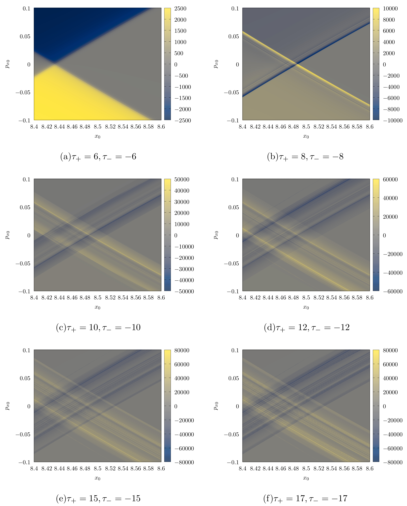
\caption{Lagrangian descriptor $M$ evaluated on the plane $p_{x_0}$-$x_0$ with initial $y_0 = 0$ and initial momentum $(p_{y_0} < 0, p_x = 0)$ for different values of $\tau_+$ and $\tau_-$. To show the symmetry of $M$ and the invariant manifolds for this initial conditions, $\tau_+ = - \tau_-$ is selected. When the value of $\tau_+$ is increased, the structure of the tangle between the stable and unstable manifolds is reveled by the abrupt jumps in the value of the Lagrangian descriptor where it converge to a non-differentiable function. The intense blue and yellow lines correspond to segments of the unstable manifolds and stable manifolds respectively.} \label{fig:LD_time}
In order to show clearly the picks generated by invariant stable and unstable manifolds of one of the three hyperbolic periodic orbits in the Lagrangian descriptor plots and find the periodic orbits, let us consider the symmetry line $y_0 = 0$ in an interval that contain $\Gamma_2$. The Lagrangian descriptor in Fig. \ref{fig:LDtime} with $\tau{-} = -\tau+$ evaluated on this line is identically zero due to the symmetries of the system. For this reason, is convenient to consider the Lagrangian descriptor with $\tau{-} = 0$ and $\tau_+ > 0$, the results are in the Fig. \ref{fig:LD_line_x0}. When the integration time $\tau_+$ is increased enough, the peak generated for the different behaviour of the trajectories reveals the intersections of the stable manifold of the periodic orbit with the $x_0$ axis. Due to the symmetry of the stable and unstable manifolds respect to the $x_0$ axis, this intersection coincides with the intersection with the unstable manifold of the periodic orbit. Finally, the intersection point between the stable and unstable manifolds is the intersection with the periodic orbit with the $x_0$ axis. It is important to notice that the integration time to generate the peak is different from the period of the orbit.
Another simple way to find the intersections between the stable and unstable manifolds is to change the negative sing in the definition \eqref{eq:LD}, then $M_+ + M_- > 0 $ and the points where is this quantity is maximal are the intersections between the stable and unstable manifolds.
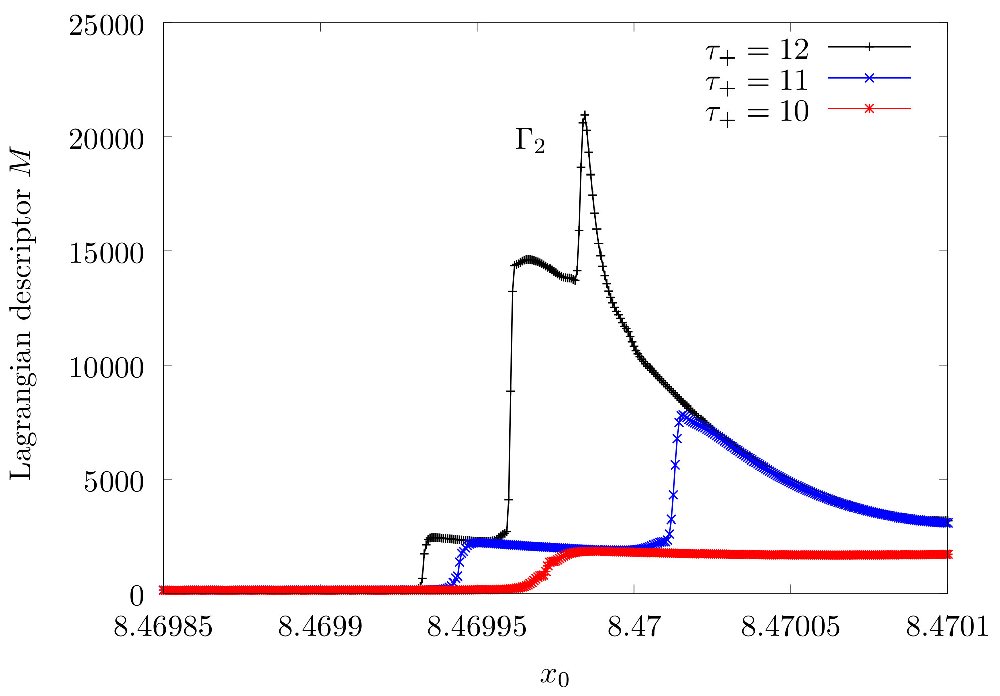
\caption{ Lagrangian descriptors evaluated on an interval of the line 𝑥0. The integration times are 𝜏−=0 and 𝜏+>0. The different colour lines in the plots correspond to different values of 𝜏+. The peaks indicate the intersection of the periodic orbit $\Gamma_2$ with the line 𝑥0. \label{fig:LD_line_x0}}
The structure of the tangle is very rich in the interaction region. To see this structure let us consider the Lagrangian descriptor evaluated on large area of the canonical conjugate plane $p_{x_0}$-$x_0$ at $y_0=0$ with initial $p_{y_0}<0$. The Lagrangian descriptors on the Fig. \ref{fig:LD_planey=0} shows the symmetries of the tangles and their complicated structure characteristic of the open chaotic Hamiltonian systems with two degrees of freedom. In the figure, some lines converge directly to constant values of the momentum in the asymptotic region. These lines correspond to the branches of stable and unstable manifolds that go directly to the asymptotic region, close to these branches there are the lobules where the particles escape or enter to the interaction region. Examples of the lobule dynamics in open Hamiltonian systems and chaotic scattering are in \cite{Gonzalez2012,Zapfe2010}. There are three disconnected regions: two unbounded regions on the extremes and one bounded region in the middle surrounded by a white region. The white region corresponds to points where the momentum $p{x_0}$ is not defined for this value of the energy.
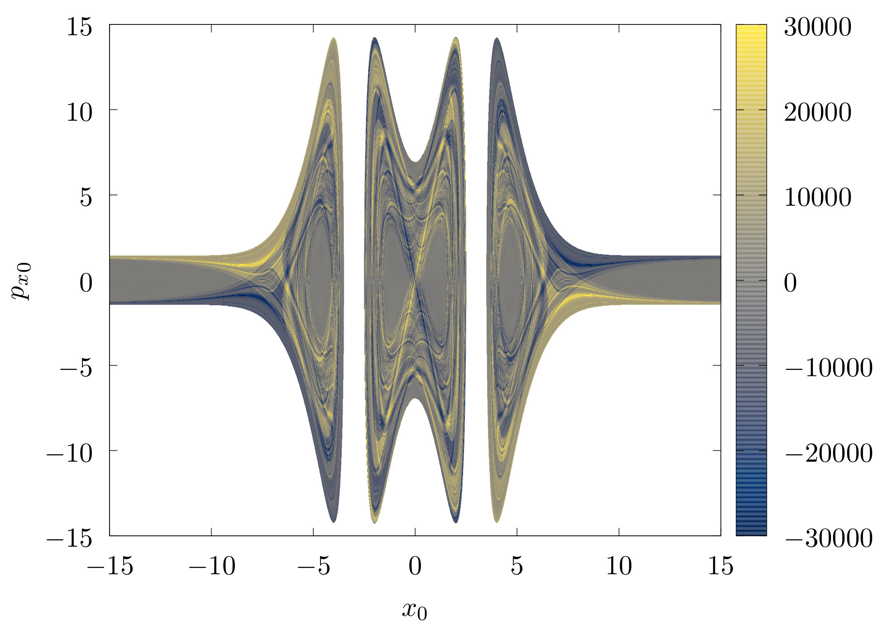
\caption{Lagrangian descriptor $M$ evaluated on the plane $p_{x_0}$-$x_0$ at $y_0=0$ with initial $p_{y_0}<0$.} \label{fig:LD_plane_y=0}
\label{sec:roaming}
An important set in the phase space to analyse the transport in the system is the dividing surface of a periodic orbit\cite{Pechukas1979,carpenter2018dynamics}. The projection of the periodic orbit in the configuration space defines a closed curve and a region inside the curve. The dividing surface is a natural surface to analyse all the trajectories of the system that cross the boundary of this region in the configuration space. The algorithm to construct the dividing surface of the periodic orbit $\Gamma$ consists of three steps:
Project the periodic orbit $\Gamma$ on the configuration space.
Construct the circumference on momentum plane using the equation
for every point $(x,y)$ on the projection of the orbit $\Gamma$ in the configuration space.
- Take the union of all these circumferences in the phase space to construct the dividing surface.
The dividing surface constructed in this way has three relevant properties for analysis of the transport: The first one, the periodic orbit $\Gamma$ and the orbit with the same projection in configuration space but opposite momentum are contained in the same dividing surface. This fact is a consequence of the time-reversal invariance of the system. The second property is that the periodic orbits used to construct the dividing surface are the boundaries between the regions where the trajectories enter into the phase space region contained by the dividing surface and trajectories that left the same region. The third property, the flux through the dividing surface is minimal. That means, if the dividing surface is deformed, the flux through it increases. The demonstrations of these properties of the dividing surfaces of periodic orbits are in \cite{Pechukas1979}, and for NHIMs with more dimensions in \cite{Waalkens_2004}.
In the system, the periodic orbits $\Gamma_1$, $\Gamma_2$, and $\Gamma_3$ are not generated by any saddle in the potential energy. Their projection in the configuration space are curves that enclose an area. In the case of unstable periodic orbits associated with saddles points, the projection on the configuration space is a line that does not enclose any area. The extremes of the projection are the returning points where the periodic orbit has zero momentum. The dividing surface, in this case, is a surface genus 0 (topologically equivalent to a sphere). An example of this kind of periodic orbits and their respective dividing surface is in \cite{Rafa2019}.
The projection in configuration space of the orbits $\Gamma_1$, $\Gamma_3$ do not have self-intersections; for this reason, the corresponding dividing surfaces are genus 1, (a torus). Another example of this kind of dividing surface is in \cite{Collins_2015}. The projection of the periodic orbit $\Gamma_2$ has an intersection at the origin, the dividing surface, in this case, is a surface genus 2.
A natural parametrization of the dividing surface is given by the arc length $l_0$ of the respective periodic orbit in the phase space and the angle between the initial momentum and the $x_0$ axis, $\phi_0 = \displaystyle{ \arctan{p_{y_0}/p_{x_0}}}$. The next calculation use this parametrisation to analyse the trajectories that cross each of the three dividing surfaces.
The fate map is an appropriate tool to classify the trajectories associated with rooming and dissociation in phase space. A fate map shows the origin and destiny of the trajectories, considering the evolution for an interval of time. In this case, the origin and destiny of the trajectories are the regions $A$, $B$, and $C$ defined in the previous section. The procedure to calculate the fate map on a dividing surface is the following: consider a point on the dividing surface, integrate forward and backwards the trajectory that crosses this point on the dividing surface until each extreme of the trajectory reaches one of the three regions, and label this point with the corresponding fate. The left side of Fig. \ref{fig:FM_LD} show the fate map for each dividing surface. Each different colour in the fate map indicates different transport between regions $A$, $B$, and $C$. The fate maps evaluated on the dividing surfaces of the periodic orbits $\Gamma_1$ and $\Gamma_2$ have all nine possibilities of transport between the regions $A$, $B$, and $C$. In the case for the dividing surface of the periodic orbit $\Gamma_3$, the fate map has only five possibilities.
In the three fate maps, exist red regions ($ C \rightarrow A $), and light blue regions ($ A \rightarrow C$). The light blue regions represent the trajectories that dissociate. The green and orange regions, ($ A \rightarrow B $) and ($ B \rightarrow A $), are the roaming regions. There are similarities between both of the fate maps for $\Gamma_2$ and $\Gamma_3$. The similarity between the fate maps is a consequence of the proximity between the orbits $\Gamma_3$ and $\Gamma_2$, see Fig. \ref{fig:orbits_3D}.
In the configuration space, all the trajectories that travel from one well to the other well should cross the projection of the periodic orbits $\Gamma_3$ and $\Gamma_2$. For this reason, the trajectories associated with roaming cross the dividing surface of $\Gamma_3$ and $\Gamma_2$ in the phase space.
The trajectories that start in one well and escape to the asymptotic region need to cross the projection of $\Gamma_1$ in the configuration space as well. These trajectories are associated with dissociation. The fate map of the dividing surface of $\Gamma_1$ shows which trajectories escape to the asymptotic region and which trajectories enter the interaction region.
In order to show the relation between the different trajectories fates and the stable and unstable manifolds of the unstable periodic orbits $\Gamma_1$, $\Gamma_2$, and $\Gamma_3$ we calculate the Lagrangian descriptors on the dividing surfaces for the three hyperbolic periodic orbits. The same segments of the trajectories are used to calculate the Lagrangian descriptors and the fate maps. Like in the calculation of the fate maps, the values of $\tau_-$ and $\tau_+$ for each trajectory are the times necessary to reach one of the three regions. Once a trajectory reaches one of the three regions, its integration stops. The results for the Lagrangian descriptors are on the right side of Fig \ref{fig:FM_LD}.
The abrupt jumps in the values of the Lagrangian descriptors are related to the different behaviour of the trajectories in a neighbourhood the stable and unstable manifolds of the unstable periodic orbits in the phase space. The stable and unstable manifolds are surfaces of dimension 2, and their intersections with a dividing surface are lines. There is a complete match between the boundaries of regions in the fate maps and the abrupt changes in the Lagrangian descriptors plots for each dividing surface. This agreement is a manifestation of the division of the phase space into the roaming and dissociation regions by the stable and unstable manifolds.
There are three different types of regions in the plots of the Lagrangian descriptor evaluated on the dividing surface: blue, yellow, and mixed regions. The colours in the Lagrangian descriptor evaluated in the dividing surfaces are related to the fates. The blue regions in the Lagrangian descriptors plots correspond to trajectories that start in one potential well, cross the dividing surface, and finally escape to infinity. These are trajectories associated with dissociation. The yellow regions correspond to trajectories that start in the asymptotic region, cross the dividing surfaces, and finally reach a potential well. The regions with mixed colours in the Lagrangian descriptor plot without abrupt changes are associated with the trajectories that connect the two wells. The mixed colours are related to other segments of the stable and unstable manifolds contained in the same set of initial conditions, and more integration time is necessary to visualise them.
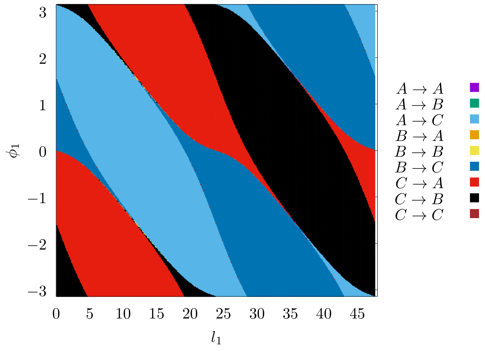
\label{fig:FM_DS_Gamma1}
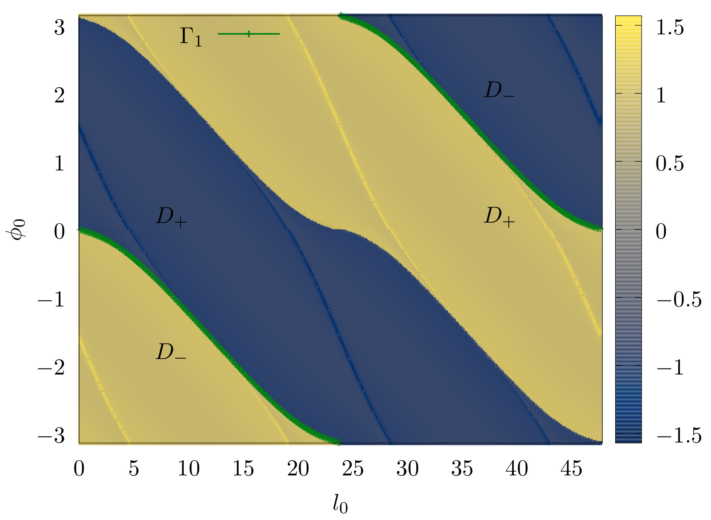
\label{fig:LD_DS_Gamma1}
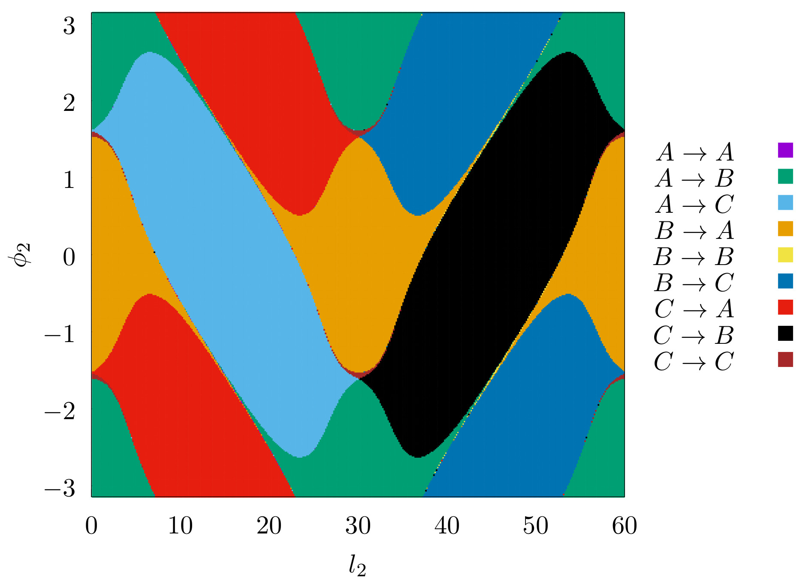
\label{fig:FM_DS_Gamma2}
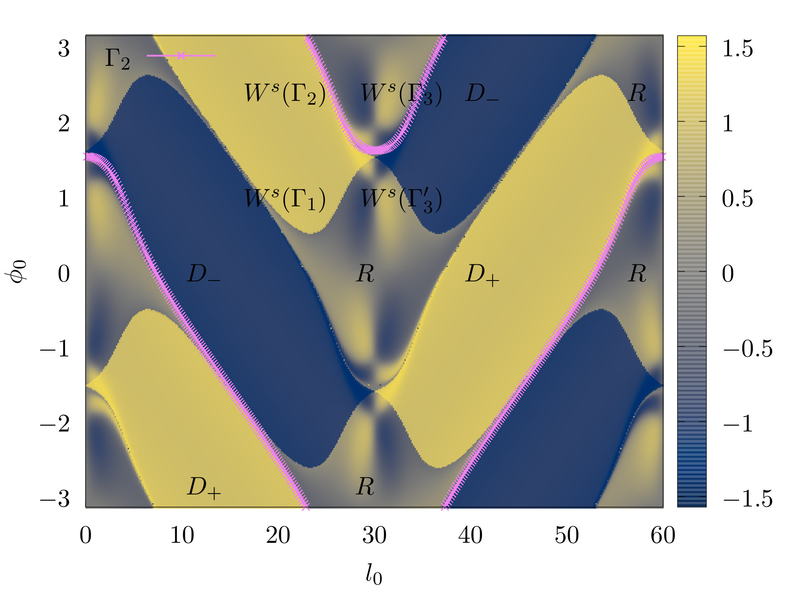
\label{fig:LD_DS_Gamma2}
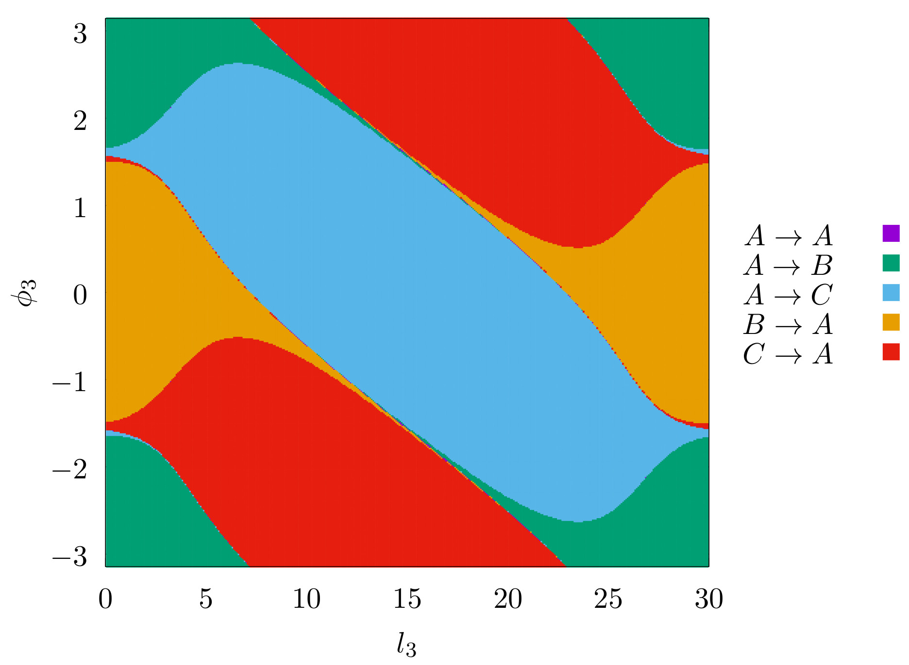
\label{fig:FM_DS_Gamma3}
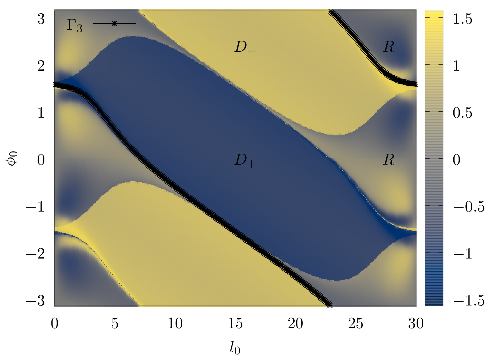
\label{fig:LD_DS_Gamma3}
\caption{ Fate map and Lagrangian descriptor evaluated on the dividing surfaces for $\Gamma_1$, $\Gamma_2$, and $\Gamma_3$. In order to improve visibility in the Lagrangian descriptor figures, the value $\arctan{0.005M}$ is plotted instead of $M$. The intersection between the dividing surface and stable manifolds and unstable manifolds are the curves with a change in the gradient. The yellow and blue curves, where the gradient change rapidly, are the intersections with the stable and unstable manifolds. There are four large regions in the plot, two regions for dissociation indicated by $D_{+}$ and, the other two regions for the inverse process $D_{-}$. The roaming regions are indicated by a letter $R$. \label{fig:FM_LD}}
The procedure to identify the stable and unstable manifolds associated with the transport from the Lagrangian descriptor and fate map plots is the following. For illustration, consider magnifications of the plots around the point $(l_2=25,\phi_2 = 2.565)$, close to the periodic orbit $\Gamma_2$, see Fig. \ref{fig:FM_LD_zoom}. There are fine strips close to $\Gamma_2$ on both magnifications. Then, consider the vertical line of initial conditions in Figs. \ref{fig:LD_DS_Gamma_zoom} and \ref{fig:FM_DS_Gamma2_zoom}, and their trajectories used to calculate the fate map and the Lagrangian descriptor. The projection of these orbits in the configuration space is in Fig. \ref{fig:orbits}. For example, the trajectory on the boundary between the green region ($A \rightarrow B$) and blue region ($A \rightarrow C$) converges to the invariant manifold $W^s(\Gamma_2)$, see the Figs. \ref{fig:FM_DS_Gamma2_zoom} and \ref{fig:orbits_AB_AC}. Continuing with the same procedure for the other boundaries is possible to identify the invariant manifolds associated with the boundaries between regions, see Figs. \ref{fig:orbits_AC_BC}, \ref{fig:orbits_BC_CC}, and \ref{fig:orbits_CC_CA}.
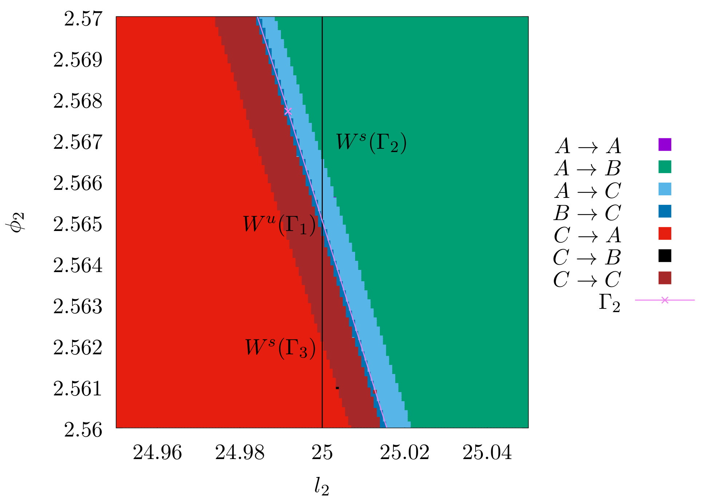
\label{fig:FM_DS_Gamma2_zoom}
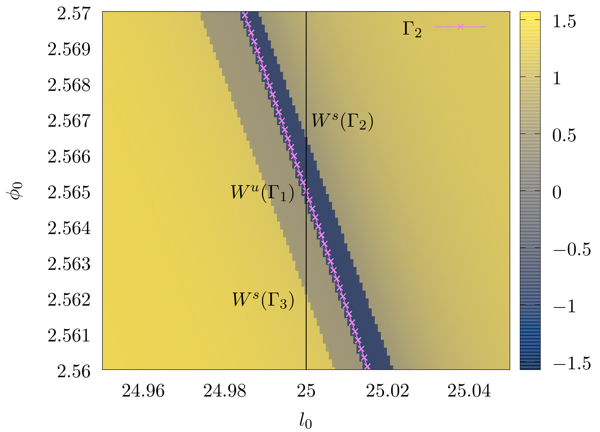
\label{fig:LD_DS_Gamma_zoom}
\caption{ Fate map and Lagrangian descriptor evaluated on dividing surface of orbit $\Gamma_2$ around the point $(l_2=25,\phi_2 = 2.565)$. To improve visibility in the Lagrangian descriptor figure, the value $\arctan{0.005M}$ is ploted instead $M$ in \ref{fig:LD_DS_Gamma_zoom}. \label{fig:FM_LD_zoom}}
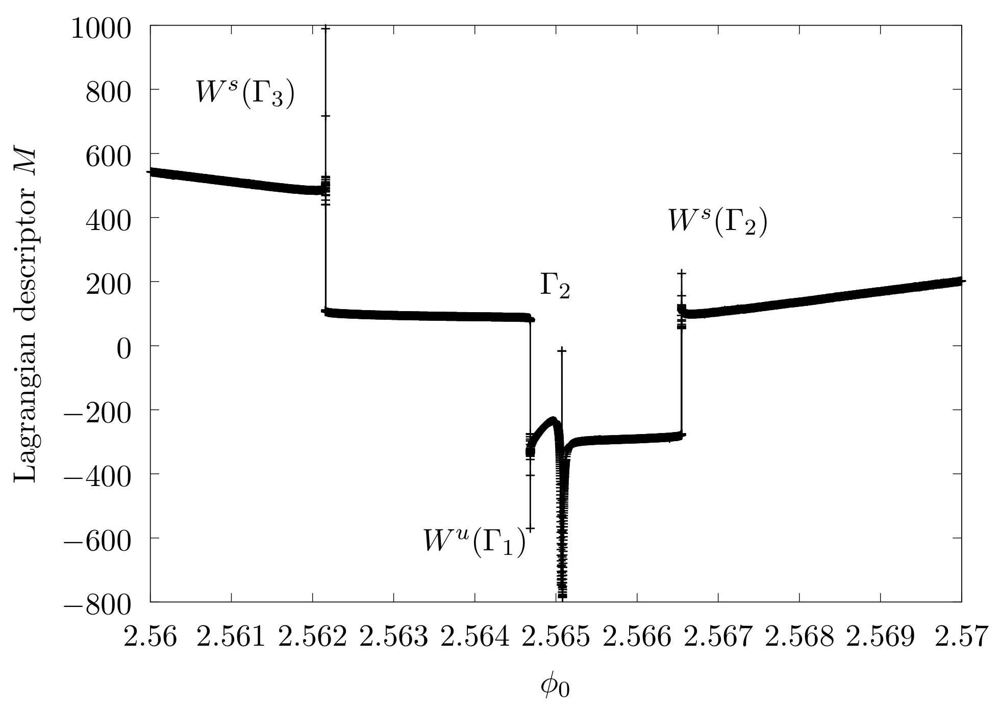
\caption{ Lagrangian descriptor evaluated on the black vertical line on the figure \ref{fig:LD_DS_Gamma_zoom}. Panel \ref{fig:LD_DS_Gamma2_zoom_zoom_line} is a magnification of panel \ref{fig:LD_DS_Gamma2_zoom_line} aroun the periodic orbit $\Gamma_2$. \label{fig:LD_line}}
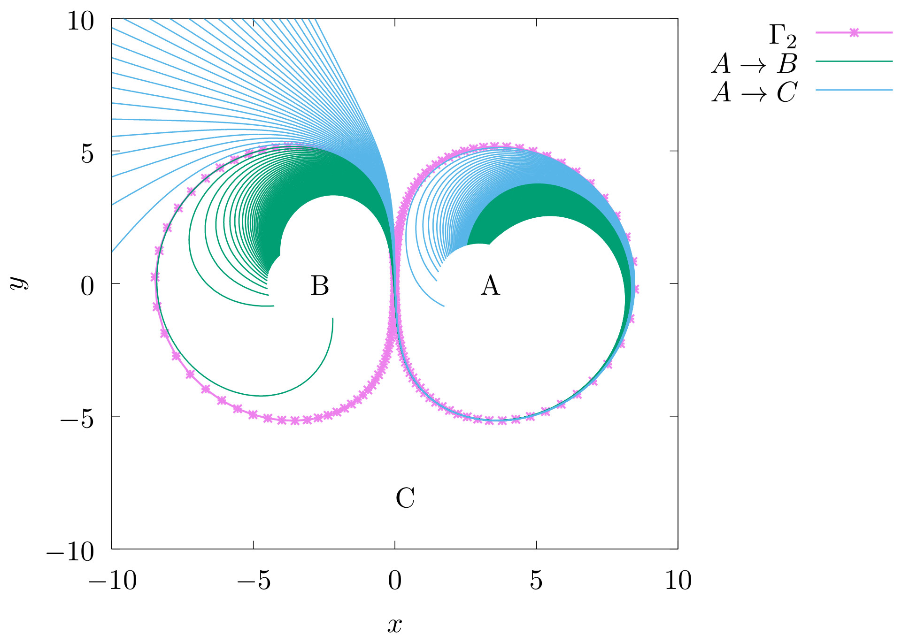
\label{fig:orbits_AB_AC}
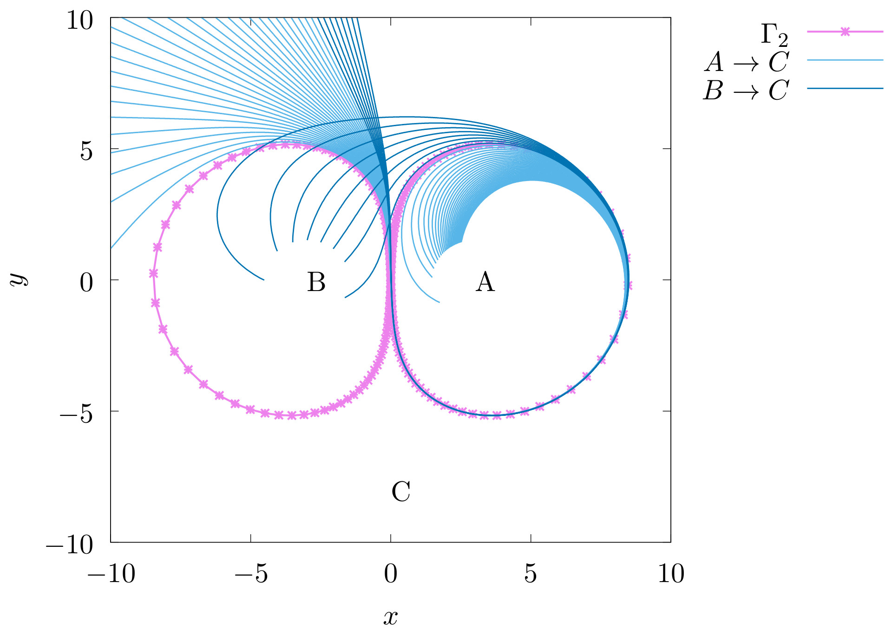
\label{fig:orbits_AC_BC}
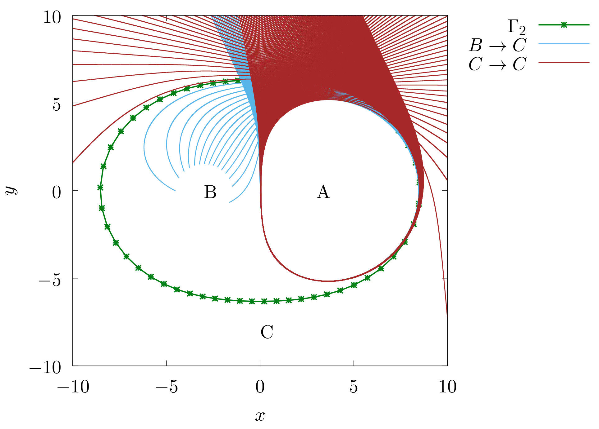
\label{fig:orbits_BC_CC}
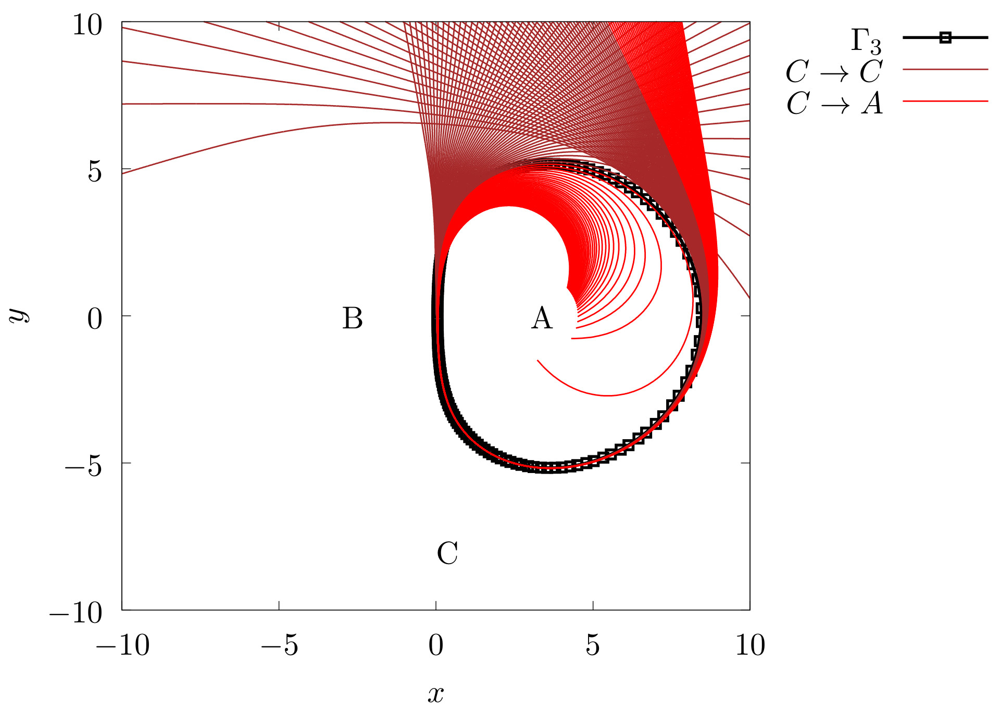
\label{fig:orbits_CC_CA}
\caption{ Projection of the trajectories that cross the black line in Fig. \ref{fig:FM_DS_Gamma2_zoom} on the dividing surface of $\Gamma_2$. The stable and unstable manifolds are the boundary between two sets of trajectories with a different fate. \label{fig:orbits}}
\bibliography{article}